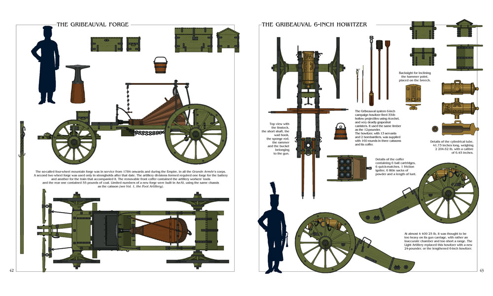
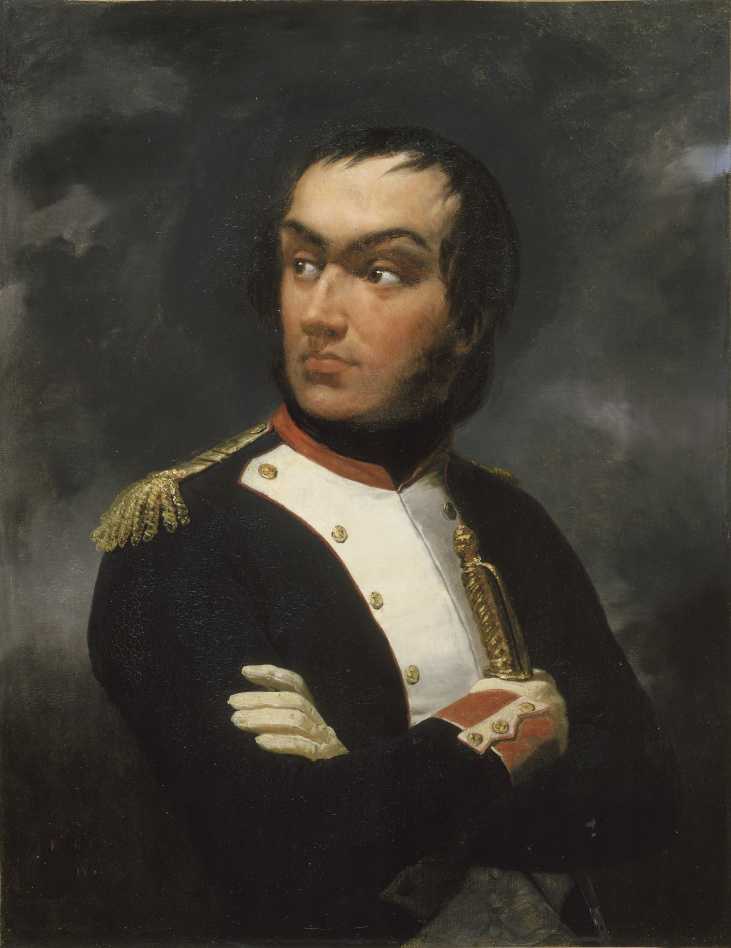
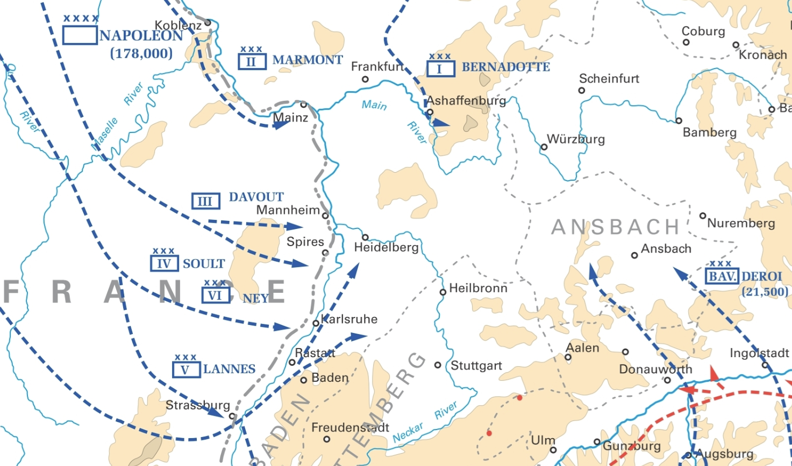
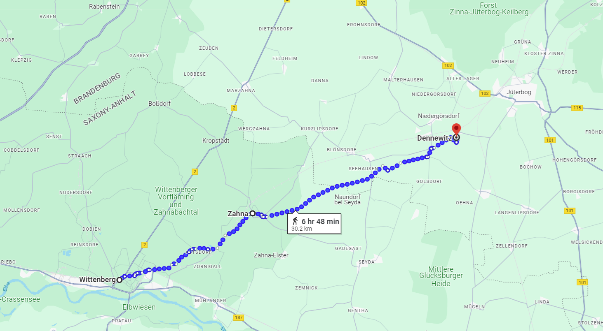
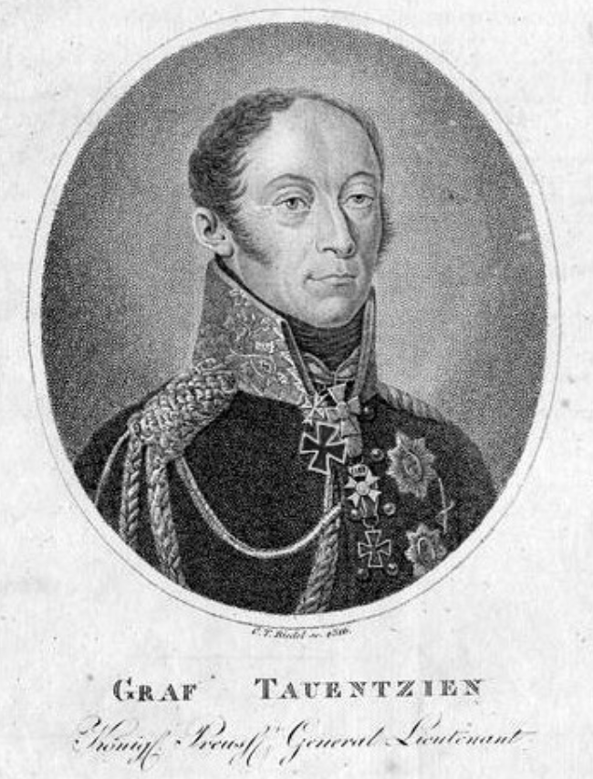

덴너비츠 전투 (2) - 인사가 만사
게시: 2024-07-15T06:30:14+09:00
네가 비텐베르크에 도착하여 확인한 베를린 방면군의 병력과 장비는 큰 문제가 없었습니다. 애초에 그로스베어런에서의 패배는 우디노가 지나치게 각 군단을 분산시킨 채 전진하는 바람에 병력 집결이 제대로 안 된 상태로 전투가 벌어지는 바람에 겪은 것이었고, 베를린 방면군의 사상자 숫자도 3천이 조금 넘는 정도에 불과했습니다. 이는 후퇴하는 우디노에 대한 추격이 거의 없었던 덕분이었습니다. 원래 프로이센군의 뷜로는 가열찬 추격전을 벌이려 했으나 소심했던 총사령관 베르나도트가 추격을 중지하도록 명령했던 것입니다. 그래서, 베를린 방면군은 병력도 6~7만으로 크게 줄지 않았고 포병대도 고작 14문의 야포만 상실하여 아직 190문 이상의 야포를 갖춘 상태였습니다. 다만 병사들, 특히 작센과 바이에른, 뷔르템베르크 등 동맹국 병사들의 사기는 과히 좋지 못했는데, 불과 며칠 전에 패주한 부대에서는 당연한 일이었습니다. 이렇게 바닥에 떨어진 사기를 고양시킬 가장 좋은 해법은 바로 승리였습니다. 그렇다면 뭐가 문제였을까요?

(나폴레옹 시대의 대포는 그냥 쇳덩어리 포신에 나무로 만든 포가를 붙여 놓은 간단한 것이라고 생각하시겠지만 당시 기술력과 산업 생산력을 고려하면 매우 정밀한 중장비였습니다. 대포가 제 역할을 하려면 도화선과 화약, 스폰지와 물통, 밀대 등등 자질구레한 소모품과 함께 탄약차는 물론 저런 이동식 대장간도 필요했는데, 열악한 도로 환경에서 저런 중장비들을 다 챙겨서 후퇴하는 것은 정말 어려운 일이었습니다. 그러나 당대의 대부분의 군대에서는 참패하여 후퇴하는 경우에도 어떻게든 대포를 챙겨서 후퇴했는데, 그걸 가능하게 해주는 것은 포병대원들의 헌신과 긍지였습니다. 보병과 기병, 포병 중에서 포병의 급여가 가장 높았던 것도 다 이유가 있는 셈입니다. 방담의 쿨름 패전처럼 전체 대포가 모조리 나포된 것은 매우 이례적인 일로서, 그때는 앞뒤가 포위된 상태에서의 산악전이었으므로 어쩔 수 없었습니다.) 바로 인사 문제였습니다. 애초에 나폴레옹의 베를린 방면군 인사 조치는 다소 투박한 면이 있었습니다. 바로 직전까지 베를린 방면군 사령관이던 우디노를 소환하지 않고 그냥 그대로 원래의 제12 군단장으로 네 밑에서 복무하도록 한 것입니다. 우디노는 부상에서 회복하지 못했다는 이유로 원래부터 1813년의 독일 원정에서 빠지기를 원했는데, 차라리 여기서 그를 해임하고 휴가를 보냈으면 더 좋았을 것입니다. 그러나 워낙 인재가 부족했던 나폴레옹은 우디노를 놓아줄 수가 없었습니다. 그렇다고 하더라도, 여태까지 총사령관으로서 다른 군단장들인 레이니에나 베르트랑의 상관이던 그에게 이젠 일반 군단장으로서 레이니에와 베르트랑과 같은 직위로 복무하라고 한 것은 다소 배려 없는 조치였습니다. 특히나 네의 명령을 받도록 한 것이 결정적이었습니다. 우디노가 네와 개인적으로 특별히 원한 관계에 있었는지는 모르겠으나, 이 둘은 나이로 보나 경력으로 보나 서로 엇비슷한 경쟁 관계였습니다. 네가 2살 더 어리긴 했지만 둘 다 40대 중반이었고, 둘 다 평민 계급 출신으로 둘 다 1799년에 사단장으로 승진했으며, 둘 다 나폴레옹과 젊은 시절부터 연을 맺은 것은 아니었고, 둘 다 용감하기로 둘째라면 서러워할 정도로 용장 스타일이었습니다. 그러나 메시와 호날두의 관계처럼 모든 경쟁 관계에서는 미세하더라도 우열이 드러나기 마련입니다. 네와 우디노의 관계에서는 네가 언제나 한발짝 앞서고 있었습니다. 네는 모스크바 대공(prince de la Moskowa)인 것에 비해 우디노는 레조 공작(duc de Reggio)에 불과한 것도 그랬지만, 네는 1804년 초대 원수 14인 중의 하나였으나 우디노는 1809년 바그람 전투 이후에야 원수봉을 받았던 것이 결정적이었습니다. 우디노는 별다른 공로도 없는 네가 원수봉을 받을 때 자신은 제외된 것이 못내 불만이었는데, 특히 자신의 능력이나 용기, 군에서의 신망이 결코 네에 비해 떨어지지 않는다는 것을 잘 알고 있었기 때문에 더욱 그랬습니다. 그런데 베를린 점령 실패에 대한 견책으로 자신이 강등되고 이제 네의 명령을 따라야 한다? 이건 우디노의 자존심을 심하게 건드리는 것이었습니다.

(우디노가 1792년 막 중령으로 선출되었던 25살 시절의 초상화입니다. 그는 원래 사병으로 시작하여 부사관이 되었으나, 귀족이 아니므로 장교로의 승진 기회가 없음에 좌절하여 전역했었습니다. 그러다 프랑스 혁명이 발발하자 다시 혁명군에 가담했고, 병사들의 투표로 장교를 뽑던 당시 꿈에도 그리던 중령으로 '선출'되었습니다.) 당장 네가 우디노로부터 베를린 방면군 사령관직을 인수인계 받을 때부터 문제가 드러났습니다. 원래 우디노는 제12 군단장으로 있으면서 베르트랑의 제4 군단, 레이니에의 제7군단, 그리고 아리기(Jean-Toussaint Arrighi de Casanova)의 제3 기병군단을 합해 임시로 만들어진 베를린 방면군 사령관직을 겸직으로 맡았기 때문에, 방면군 사령관을 위한 별도의 참모 조직을 따로 가지고 있지 않았습니다. 그래서 원래의 제12 군단장 역할만을 맡게 되면서 방면군 참모진을 거의 대부분 그대로 데려가 버렸습니다. 이건 항명까지는 아니더라도, 사실상 노골적인 몽니였습니다. 물론 네도 홀몸으로 부임한 것은 아니었지만 방면군을 지휘하려면 그 부대 사정과 그 일대의 지리를 잘 아는 기존 참모진들의 보좌가 꼭 필요했습니다. 이렇게 우디노가 '어디 한번 잘 해보슈'라는 심보로 기존 참모들 대부분을 데려가버린 것은 결국 큰 사달을 일으키고 맙니다. 그 사정이 어떻든 간에, 나폴레옹이 정해놓은 시간표는 꼭 지켜야 했습니다. 그래서 예하 부대에 대해 잘 알지 못하는 상태에서도 네는 일단 6월 4일 베를린을 향한 진격을 시작합니다. 네도 우디노와의 면담을 통해 그로스비어런의 패배 원인은 지나치게 분산된 상태로 진격하다 벌어진 일이라는 것을 이해하고 있었습니다. 그래서 이번에는 정반대로, 하나의 경로를 통해 총 3개 군단과 1개 기병 군단을 몰고 북서쪽으로 진격했습니다. 하지만 우디노가 불과 1~2주일 전에 북진할 때는 총 3개 경로로 진격했던 것이 머리가 나쁘거나 경험이 없어서 그랬던 것은 아니었습니다. 이렇게 1개 경로로 수만의 군대를 움직이는 것에는 당연히 대가가 따랐는데, 현지 식량 조달에도 문제가 생기겠지만 더 큰 문제는 좁은 길을 따라 대군이 움직이다보니 전체 병력이 십여 km에 걸쳐 늘어진다는 문제가 있었습니다. 이렇게 길게 늘어진 군대는 전위 부대에 문제가 생겨도 후위 부대가 그를 돕지 못하는 문제가 생깁니다. 여러 경로를 통해서 이동해도 서로 거리가 떨어지게 되므로 어차피 서로 돕지 못하게 되지 않냐고요? 그럴 수도 있습니다만 그 각각의 경로 사이에 대안의 교통로가 있다면 해결될 수 있는 문제였습니다. 그리고 대개가 평야로 이루어진 유럽의 전장에서는 대안 교통로가 보통 존재했습니다. 하지만 하나의 도로를 따라 전군이 움직인다면 교통 정체 때문에 전체 부대가 조금씩 축차 투입되는 결과를 낳을 수도 있었습니다.

(1805년 제3차 대불동맹전쟁이 벌어지자 보헤미아로 밀물처럼 몰려가는 나폴레옹과 그의 휘하 군단들의 모습입니다. 저렇게 넓은 지역에 걸쳐 여러 경로로 이동하는 것에는 다 이유가 있는 법입니다.) 한편, 그로스비어런 전투에서 우디노를 격파한 베르나도트의 북부 방면군의 상황은 어땠을까요? 그 쪽은 그 쪽대로 불만이 많았습니다. 베르나도트가 지나치게 몸을 사렸기 때문이었습니다. 총사령관인 베르나도트가 데려온 스웨덴군은 불과 2만 정도에 불과했는데, 그나마 베르나도트는 그들을 전투에 투입하는 것을 극도로 꺼려 언제나 스웨덴군을 저 후방에 예비대로만 배치했습니다. 결국 실제 전투에서 피를 흘리는 역할은 프로이센군이 다 담당해야 했는데, 소극적인 베르나도트는 뭐가 무서운지 프로이센군의 고삐를 틀어쥐고 프랑스군과의 전투를 가급적 피하려 했습니다. 혹자는 베르나도트가 나폴레옹과 싸우는 것을 겁냈기 때문이라고 하고 혹자는 장차 나폴레옹을 몰아낸 뒤 자신이 프랑스의 왕좌에 앉을 생각이 있었기에 가능한 한 프랑스인들의 원한을 사는 것을 피하려 했기 때문이라고도 설명합니다. 그 내막은 알 수 없으나, 확실한 것은 그렇게 소극적인 베르나도트와는 반대로 북부 방면군의 주력을 이루는 프로이센군은 싸우기를 원했다는 것이었습니다. 하지만 결국 나폴레옹을 쓰러뜨린 트라헨베르크 의정서의 원저자는 베르나도트였고, 적과 무리하게 교전하지 않지만 적과의 접촉을 유지하여 괴롭힌다는 그 작전의 취지를 일관성 있게 지키려 한 것도 베르나도트였습니다. 그는 후퇴한 우디노의 뒤를 멀직이 거리를 두고 추격하여 그로스비어런에서 남쪽으로 거의 50km 정도 떨어진 위터보크(Jüterbog) 일대까지 내려와 있었습니다. 그러나 여기서도 그의 후방 본능은 완고하여, 그의 전방 우익, 그러니까 서쪽에는 뷜로(Friedrich Wilhelm Freiherr von Bülow)의 프로이센 제3군단을, 그리고 전방 좌익인 동쪽에는 타우엔치엔(Bogislav Friedrich Emanuel von Tauentzien)의 프로이센 제4군단을 배치했고, 자신은 애지중지하는 스웨덴군 및 러시아군을 이끌고 예비대로 하여 멀찍이 후방에 자리잡고 있었습니다.
이런 와중에 9월 6일, 마침내 네의 선두 부대가 프로이센군 앞에 나타납니다.

(비텐베르크에서 덴너비츠까지는 30km 정도로서, 하루 하고도 반나절 정도 걸리는 거리입니다.)

(나폴레옹보다 9세 연상이었던 타우엔치엔은 포츠담에서 태어나 15세의 나이로 입대한 매우 전형적인 프로이센 귀족 출신 군인이었습니다. 실은 그에겐 1813년 이전에는 별다른 군사적 업적이 없었는데, 이유는 그가 30대 중령이던 시절에 국왕의 참모로 선발되어 주로 외교 임무에 투입되었기 때문이었습니다. 그의 정식 이름에는 von Wittenberg이 붙는데, 이건 이번 덴너비츠 전투의 공로가 인정된 것이 아니라 1813년 12월 토르가우 요새의 항복을 받아낸 데 이어 1814년 1월 비텐베르크 요새의 항복을 받아낸 공로로 받은 호칭입니다.) Source : The Life of Napoleon Bonaparte, by William Milligan Sloane Napoleon and the Struggle for Germany, by Leggiere, Michael V With Napoleon's Guns by Colonel Jean-Nicolas-Auguste Noël https://histoireetcollections.com/en/napoleonic-wars/3873-artillery-and-the-gribeauval-system-1786-1815-vol-2-os-26.html https://en.wikipedia.org/wiki/Battle_of_Dennewitz https://battlefieldanomalies.com/napoleonic-wars/the-battle-of-dennewitz https://en.wikipedia.org/wiki/Bogislav_Friedrich_Emanuel_von_Tauentzien https://en.wikipedia.org/wiki/Friedrich_Wilhelm_Freiherr_von_B%C3%BClow https://en.wikipedia.org/wiki/War_of_the_Third_Coalition